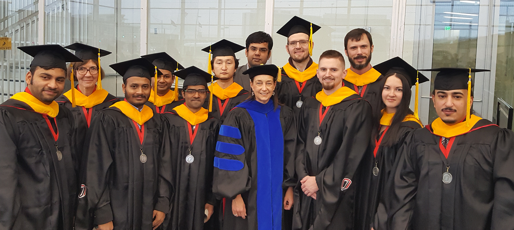

In 2016, Dr. Fruhling was honored with the Faculty Award for Outstanding Graduate Mentor.
Courses Taught
Graduate Courses
BMI 8100 -- Introduction to Biomedical Informatics - new course - new degree
BMI 8450 -- International Health Informatics - new course - new degree
CIST 9900 -- Doctoral Seminar - Human Computer Interaction Research - new course
CSCI 8256 -- User Interface Design and Development
CSCI 8640 -- Human Computer Interaction
CSCI 8836 -- Software Engineering
ISQA 8040 -- Systems Analysis and Design
ISQA 8080 -- Value Based Software Engineering - new curriculum
ISQA 8950 -- MIS Graduate Capstone - new course
ISQA 9900 -- HCI Research Seminar - new curriculum
ISQA 9990 -- Public Health Informatics Research - new curriculum
ISQS 8110 -- Modern Software Design
Undergraduate Courses
CIST 1010 -- Foundations of IS&T
CIST 1010 -- Distance Education Course - Foundations of IS&T
CIST 1100 -- Computer Concepts and Applications
CIST 3100 -- Organizations, Applications, and Technology
CSCI 1810 -- Introduction to COBOL
CSCI 2810 -- Advanced COBOL
CSCI 2830 -- Java Programming
CSCI 4260 -- User Interface Design and Development
CSCI 4650 -- Human Computer Interaction
CSCI 4830 -- Software Engineering
CSCI 4980 -- Senior Seminar - Careers and Trends in IT
CSCI 4980 -- Electronic Commerce - new curriculum
ISQA 3310 -- Database Design and Management
ISQA 3420 -- Managing in a Digital World
ISQA 4110 -- Information Systems Analysis
ITIN 4440 -- Agile Development Methods - new curriculum - new degree
ITIN 4990 -- ITIN Capstone - new curriculum - new degree

Dr. Fruhling's 2016 Capstone Graduates
Dissertations and Theses Supervised
Silpi S. Baishya - Thesis Committee Member, "Formal Verification of Speed Control Strategies with SPIN Model Checker"
Ayisha Bashir - Thesis Member, "Perspectives Of Nurses Towards Telehealth Efficacy and Quality of Health"
Brandy Bose - MIS Master Thesis Advisor, "An Exploratory Study of the Barriers Between Users of Electronic Health Record Systems"
Eric Chambers - Master's Thesis Committee Member, "Electronic Medical Record System with Integrated Diagnosis Assistance and Ontology-Based Definition Retrieval"
Becky Dietenbeck - Thesis Committee Member, "Technology Infrastructures for Healthcare Access to Rural Residents"
Cheryl Fernandez - Thesis Committee Member, "Acceptance of Technological Change: Do Expertise and Self-Efficacy Matter?"
Mariann Fossum, UiA - Doctoral Committee Member (UiAgder, Norway) - Graduated
Venkat Garlapati - Thesis Member
Liz Gomez, NJIT - Dissertation External Committee Member, "Mobile Information Communication Technology in Crisis Management: Understanding User Behavior, Response, and Training". PhD Committee Co-Advisors: Dr. Murray Turoff, Dr. Norbert Elliott. Internal Committee: Dr. Michael Chumer, Dr. Jerry Fjermestad, Dr. Katia Passerini
Lisa Grabenbauer, UNMC - Doctoral Committee Member, dissertation proposal: "EHR Usability for Cardiac Inpatient Care". With my guidance Lisa submitted a paper to the AMCIS SIG Health Workshop for the JAIS special issue. Her paper was accepted and she presented her research proposal. - Graduated
Tim Guerthman - MIS Master Thesis Advisor
Peter Hospodka - Master's Thesis Committee Member, "Bayesian Reasoning in a Fact-Proposition Space"
Syed Shiraz Hussain - Thesis Committee Member, "High Level Synthesis System using Program Transformation"
Hege Johnsen, UiA - Doctoral Committee Member, "Teaching clinical reasoning skills to nursing students with technology enhanced learning". Dr. Mariann Fossum Advisor at the University of Agder
Noel Johnson - Thesis Committee Member, "Evaluation of a Telehealth Consultation System for State Public Health Laboratories"
Janyl Jumadinova - Doctoral Committee Member: "FORETELL: Aggregating Distributed, Heterogeneous Information from Diverse Sources Using Market-based Techniques"
Valeryia Kettelhut, UNMC - Doctoral Committee Member, "Improving Antibiotic Resistant Infection Transmission Situational Awareness in Enclosed Facilities with a Novel Interface Design for Tactical Biosurveillance". Graduated, James McClay, M.D. (advisor), David Mercer, M.D., Jane Meza, Ph.D., Ann Fruhling, Ph.D., Trevor Vanschooneveld, M.D.
Pushpa Koneri - Thesis Committee Member, "Increasing Software Inspection Capability using Collaborative Tools"
Bettina Lechner - MIS Master Advisor, "Identifying New and Obsolete Usability Heuristics for Web-based Business Software"
Daniel McDonald - Thesis Chair, thesis: "HCI Technology Systems' Hardware Design Principles for Children with Hemiparesis" - Graduated
Scott McGrath - BIOI Thesis Member, thesis: "How Personal should Personal Genomics be? A study of the direct to consumer market for genetic testing and the need for an honest broker". - Graduated
Devika Ram - Thesis Chair, thesis: "Patient Authentication Methods Preferences for Patient Medical Records"
Devika Ramachandran - Thesis Advisor, thesis: "Perspectives Of Nurses Towards Telehealth Efficacy and Quality of Health"
Aaron Read - Doctoral Committee Member, "Improving Requirements Generation Thoroughness in User-Centered Workshops: The Role of Prompting and Shared User Stories"
Olympia Saha - Doctoral Committee Member
Lucas Steinhauser - Doctoral Committee Member. I spent quite a bit of time reviewing his dissertation and then met with him several times to help him so that he could graduate.
Rahman Strum, UNMC - UNMC/Masters of Public Health - Capstone - Preceptor, "Public Health Informatics: Increasing Use and Access"
Alvin Tarrell - Doctoral Advisor, Dissertation Proposal: "Toward Visualization-Specific Heuristic Evaluation"
Kimberly Tyser - Thesis Co-Chair, "Increasing Usability Testing Productivity using Collaboration Tools"
Sandra Vlasnik - Computer Science Graduate Capstone, Preceptor
- Home
- Grants & Contracts
- Teaching
- Publications
- Research Projects
- Awards
- About
- STATPack™
- Student Research Posters
Contact
Ann L. Fruhling, Ph.D.
Professor
Director, School of Interdisciplinary Informatics
College of Information Science and Technology
University of Nebraska at Omaha
Peter Kiewit Institute - Office 280A
Telephone: (402) 554-4968
E-mail: afruhling@unomaha.edu
Comments

“Don't dream your life, live your dreams.”